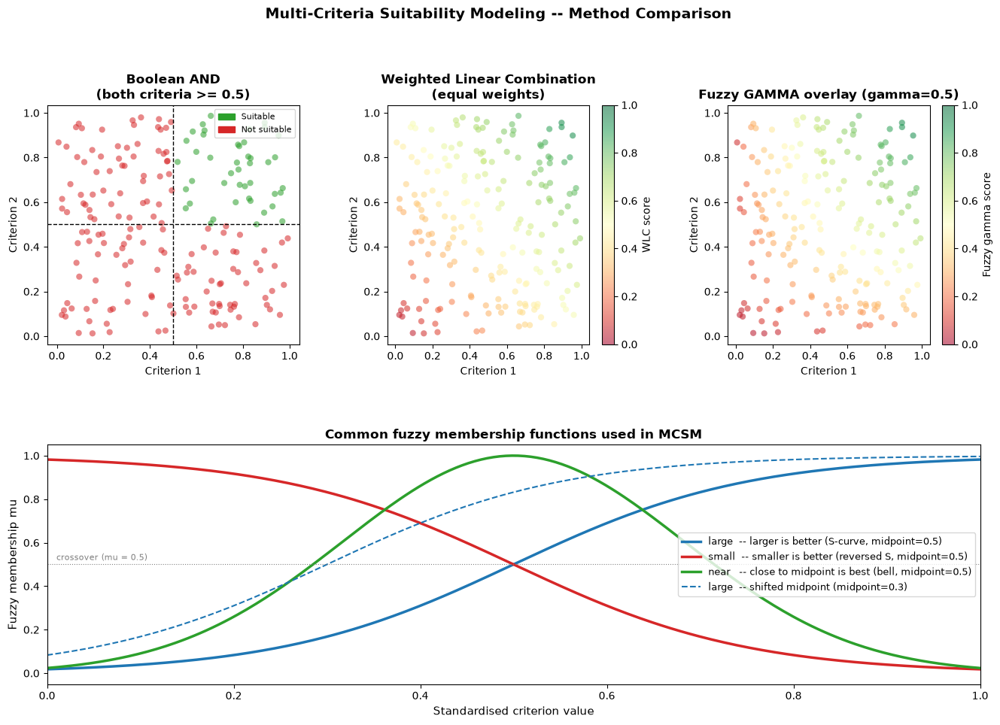

Code
# Display matplotlib figures inline in this Jupyter notebook.
%matplotlib inline
# Third-party numeric / plotting stack for the method-comparison figure.
import numpy as np # array ops for toy criteria and membership curves
import matplotlib.pyplot as plt # figure and axes creation
import matplotlib.patches as mpatches # legend patches for Boolean classes
from matplotlib.gridspec import GridSpec # 2x3 layout for comparison panels
# ===================================================================
# Toy data: 200 random locations with two criteria on a 0-1 scale.
# Used only to illustrate Boolean AND, WLC, and fuzzy GAMMA visually.
# ===================================================================
rng = np.random.default_rng(42) # reproducible RNG for the scatter demo
n = 200 # number of synthetic locations
c1 = rng.uniform(0, 1, n) # criterion 1 (e.g. normalised need)
c2 = rng.uniform(0, 1, n) # criterion 2 (e.g. normalised rurality)
# Boolean AND: a location is suitable only if both criteria are at least 0.5.
bool_mask = (c1 >= 0.5) & (c2 >= 0.5) # crisp pass/fail mask
# Weighted linear combination with equal weights (full trade-off).
wlc = 0.5 * c1 + 0.5 * c2 # continuous suitability score in [0, 1]
# Fuzzy GAMMA overlay: blend fuzzy AND (min) and fuzzy OR (max).
fuzzy_and = np.minimum(c1, c2) # fuzzy AND = element-wise minimum
fuzzy_or = np.maximum(c1, c2) # fuzzy OR = element-wise maximum
gamma = 0.5 # 0 -> pure AND, 1 -> pure OR; 0.5 balances both
fuzzy_gamma = (fuzzy_and ** (1 - gamma)) * (fuzzy_or ** gamma) # gamma product blend
# ===================================================================
# Membership function definitions (pure NumPy, matching ArcGIS-style shapes).
# ===================================================================
x = np.linspace(0, 1, 300) # dense x-grid for plotting membership curves
# Membership: larger values score closer to 1 (S-curve).
def ms_large(x, mid=0.5, spread=5):
"""S-curve: 'larger is better'."""
return 1 / (1 + np.exp(-spread * (x - mid))) # logistic rising through midpoint
# Membership: smaller values score closer to 1 (reversed S-curve).
def ms_small(x, mid=0.5, spread=5):
"""Reversed S-curve: 'smaller is better'."""
return 1 / (1 + np.exp(spread * (x - mid))) # logistic falling through midpoint
# Membership: values near the midpoint score closest to 1 (bell).
def near(x, mid=0.5, spread=5):
"""Symmetric bell: 'close to midpoint is best'."""
return np.exp(-spread * (x - mid) ** 2) # Gaussian-like peak at midpoint
# ===================================================================
# Build the 2-row comparison figure: Boolean / WLC / GAMMA + memberships.
# ===================================================================
fig = plt.figure(figsize=(16, 10)) # wide canvas for three scatters + one curve panel
gs = GridSpec(2, 3, figure=fig, hspace=0.42, wspace=0.35) # 2 rows, 3 columns with spacing
cmap_suit = 'RdYlGn' # red-yellow-green colormap for continuous scores
scatter_kw = dict(alpha=0.55, edgecolors='none', s=35) # shared scatter style
# --- Boolean AND panel (top-left) ---
ax0 = fig.add_subplot(gs[0, 0]) # first panel in the top row
colors0 = np.where(bool_mask, '#2ca02c', '#d62728') # green = pass, red = fail
ax0.scatter(c1, c2, c=colors0, **scatter_kw) # plot locations coloured by pass/fail
ax0.axvline(0.5, color='k', lw=1, ls='--') # vertical threshold line for criterion 1
ax0.axhline(0.5, color='k', lw=1, ls='--') # horizontal threshold line for criterion 2
ax0.set_title('Boolean AND\n(both criteria >= 0.5)', fontweight='bold') # panel title
ax0.set_xlabel('Criterion 1'); ax0.set_ylabel('Criterion 2') # axis labels
patch_s = mpatches.Patch(color='#2ca02c', label='Suitable') # legend patch for suitable
patch_n = mpatches.Patch(color='#d62728', label='Not suitable') # legend patch for unsuitable
ax0.legend(handles=[patch_s, patch_n], fontsize=8) # show Boolean class legend
# --- WLC panel (top-centre) ---
ax1 = fig.add_subplot(gs[0, 1]) # second panel in the top row
sc1 = ax1.scatter(c1, c2, c=wlc, cmap=cmap_suit, vmin=0, vmax=1, **scatter_kw) # colour by WLC score
fig.colorbar(sc1, ax=ax1, label='WLC score') # continuous score colourbar
ax1.set_title('Weighted Linear Combination\n(equal weights)', fontweight='bold') # panel title
ax1.set_xlabel('Criterion 1'); ax1.set_ylabel('Criterion 2') # axis labels
# --- Fuzzy GAMMA panel (top-right) ---
ax2 = fig.add_subplot(gs[0, 2]) # third panel in the top row
sc2 = ax2.scatter(c1, c2, c=fuzzy_gamma, cmap=cmap_suit, vmin=0, vmax=1, **scatter_kw) # colour by gamma score
fig.colorbar(sc2, ax=ax2, label='Fuzzy gamma score') # gamma score colourbar
ax2.set_title(f'Fuzzy GAMMA overlay (gamma={gamma})', fontweight='bold') # panel title with gamma
ax2.set_xlabel('Criterion 1'); ax2.set_ylabel('Criterion 2') # axis labels
# --- Membership function panel (bottom row, full width) ---
ax3 = fig.add_subplot(gs[1, :]) # span all three columns on the bottom row
ax3.plot(x, ms_large(x, 0.5, 8), lw=2.5, color='#1f77b4',
label='large -- larger is better (S-curve, midpoint=0.5)') # rising S-curve
ax3.plot(x, ms_small(x, 0.5, 8), lw=2.5, color='#d62728',
label='small -- smaller is better (reversed S, midpoint=0.5)') # falling S-curve
ax3.plot(x, near(x, 0.5, 15), lw=2.5, color='#2ca02c',
label='near -- close to midpoint is best (bell, midpoint=0.5)') # peaked near mid
ax3.plot(x, ms_large(x, 0.3, 8), lw=1.5, color='#1f77b4', ls='--',
label='large -- shifted midpoint (midpoint=0.3)') # same shape, lower midpoint
ax3.axhline(0.5, color='grey', lw=0.8, ls=':') # crossover reference at mu = 0.5
ax3.text(0.01, 0.52, 'crossover (mu = 0.5)', fontsize=8, color='grey') # label the crossover
ax3.set_xlabel('Standardised criterion value', fontsize=11) # x-axis: raw criterion
ax3.set_ylabel('Fuzzy membership mu', fontsize=11) # y-axis: membership in [0, 1]
ax3.set_title('Common fuzzy membership functions used in MCSM', fontweight='bold') # panel title
ax3.legend(fontsize=9, loc='center right') # place legend away from the curves
ax3.set_xlim(0, 1); ax3.set_ylim(-0.05, 1.05) # keep membership curves fully visible
# Figure-level title spanning all panels.
fig.suptitle('Multi-Criteria Suitability Modeling -- Method Comparison',
fontsize=14, fontweight='bold', y=1.01) # title styling
plt.tight_layout() # tighten spacing between panels
plt.show() # render the comparison figure in the notebook
